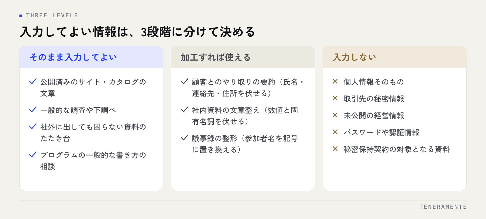

生成AIの社内ルールは、分厚い規程にするほど読まれなくなります。実際に守られるのは、入力してよい情報の線引き・使ってよいツール・出力物の確認責任の3点が1枚に収まっているルールです。この記事では、テンプレートに載せる10項目と、それぞれを自社でどう決めるかを整理します。
📌 この記事の結論
生成AIの社内ルールで先に決めるべきは禁止事項ではなく、「何を入力してよいか」の線引きです。ここが空白のままだと、現場は使ってよいのか分からず手が止まります。
01生成AIの社内ルールは「禁止」ではなく「線引き」から書く
生成AIの社内ルールを作るとき、最初に書きたくなるのは禁止事項です。しかし禁止だけを並べたルールは、現場から見ると「結局どこまでなら使えるのか」が分からない文書になります。判断できない業務は、安全側に倒れて使われません。
実務で起きるのは「使いすぎ」より**「怖くて使わない」**のほうです。顧客名の入ったメールを要約したい、見積の説明文を整えたい。そのたびに上司へ確認していては、AIを入れた意味がなくなります。
ルールの役割は、危ない使い方を止めることと同時に、安全な使い方を許可することにあります。「この範囲なら確認なしで使ってよい」と書いてあるルールだけが、現場の手を動かします。つまずきの典型は中小企業のAI導入が失敗する7つのパターンにまとめています。
02社内ルールに載せる10項目
1枚に収める前提で、最低限これだけは決めます。多くても2ページに収めてください。
- 目的と適用範囲：誰に適用されるか（正社員・パート・業務委託・派遣）
- 使ってよいツールと契約形態：無償版か法人プランか、個人アカウントの可否
- 入力してよい情報の線引き：そのまま可・加工すれば可・不可の3段階
- 入力してはいけない情報：個人情報、取引先の秘密情報、未公開の経営情報
- 出力物の確認責任：誰が確認し、誰の名前で外に出るか
- 外部に出すときの扱い：顧客提出物、公開文書、契約書の下書き
- 著作権・第三者の権利：画像生成、他社の文章の投入、社外資料の扱い
- 記録の残し方：どの業務でどう使ったかを残すか、残さないか
- 相談窓口：迷ったとき誰に聞くか、判断が付かないときの扱い
- 見直しの頻度：いつ誰が更新するか（ツールの仕様は変わります）
このうち、多くの会社で抜けるのは5・8・9です。使ってよい範囲は書いてあるのに、出した結果の責任と、迷ったときの相談先がない。結果として、判断がその場の空気で決まってしまいます。
03入力してよい情報の線引きをどう決めるか
線引きを「機密／非機密」の2択にすると、ほとんどの業務が判断できません。実務では3段階に分けると当てはめやすくなります。

判断の基準はシンプルです。その内容がそのまま社外の第三者に見られたときに困るかどうか。困るなら、伏せるか、入れないかのどちらかになります。氏名や連絡先を伏せれば済む情報は、多くが真ん中の段階に入ります。
- そのまま入力してよい：公開済みの自社サイトやカタログの文章、一般的な調査や下調べ、社外に出しても困らない資料のたたき台、プログラムの一般的な書き方の相談
- 加工すれば使える：顧客とのやり取りの要約（氏名・連絡先・住所を伏せる）、社内資料の文章整え（数値と固有名詞を伏せる）、議事録の整形（参加者名を記号に置き換える）
- 入力しない：個人情報そのもの、取引先の秘密情報、未公開の経営情報、パスワードや認証情報、秘密保持契約の対象となる資料
ツールと契約形態もここで決める
契約形態によって扱いは変わります。法人向けプランやAPI利用では入力内容を学習に使わない設定が一般的ですが、条件は提供元と契約ごとに異なります。「自社が契約しているプランではどうか」を必ず確認し、その前提をルールに書いてください。無償版と法人プランを同じ文で扱うと、後で必ず食い違います。
使ってよいツールは一覧で明示し、一覧にないものは窓口に相談する形にすれば、ルールを作り直さずに増やせます。見落としやすいのは、文章校正や要約など「生成AI」と名乗らないサービスです。見出しを**「外部サービスに社内の文章を入力するとき」**にしておくと、この漏れを防げます。
04出力物の確認責任を明記する
生成AIの出力は、事実と異なる内容がそれらしい形で出ることがあります。書くべきは「気をつける」ではなく、誰が確認して、誰の責任で外に出るかです。
- 確認者：作成した本人が確認する。上長の承認が要る文書は、AI利用の有無にかかわらず従来どおり
- 責任の所在：AIが書いたかどうかにかかわらず、社名で出す文書の責任は自社にある
- 数字と固有名詞：出力に含まれる数値・日付・社名・法令名は、必ず一次情報で確かめる
- そのまま出さない範囲：契約書、見積、顧客への回答は下書きまでとし、必ず人が仕上げる
一文で済ませたい場合は、「AIの出力は下書きであり、確認して出した人の成果物とする」と書けば足ります。短くても、責任の所在が動かないことが伝わります。
05テンプレートの構成例：1枚に収める並び順
現場が最も見たい項目が先に来る並びにします。
- 冒頭3行：目的（使ってよい、ただし条件がある）／適用範囲／相談窓口
- 表1：使ってよいツールと、認められるアカウント・プラン
- 表2：入力してよい情報の3段階
- 箇条書き：出力物の確認責任と、外部に出すときの扱い
- 箇条書き：著作権と第三者の権利で気をつけること
- 末尾2行：迷ったときの連絡先／更新日と次回見直し時期
規程の体裁を整えることより、1枚で判断できることを優先してください。就業規則との整合が必要な場合も、まず運用ルールを配り、条文への反映は後から行うほうが現場は動きます。
注意：他社のひな形をそのまま配らない
公開されているひな形は出発点としては有用ですが、扱う情報も契約プランも会社ごとに違います。最低でも「使ってよいツール」「入力の線引き」「相談窓口」の3か所は、自社の実態に書き換えてから配ってください。
06配って終わりにしないための3つの仕掛け
ルールは配布した時点では運用されていません。定着には次の3つを同時に用意します。
具体例を10個添える — 「この文章はそのまま入れてよい」「これは伏せてから」を自社の実際の業務で示します。抽象的な基準より例のほうが速く伝わります。用途の例は中小企業のChatGPT業務活用ガイドにあります。
研修とセットにする — ルールだけを配ると、読む人と読まない人に分かれます。実際に触りながら線引きを説明すると、質問がその場で出ます。設計は法人向けAI研修の選び方を参考にしてください。
見直し日を先に決める — ツールの仕様も契約条件も変わります。「次回見直し：◯月」と末尾に書いておくだけで、形骸化を避けられます。
07よくある質問
ルールは何ページくらいが適切ですか？
まず何から着手すればよいですか？
個人アカウントでの業務利用は禁止すべきですか？
08まとめ：ルールは「使ってよい範囲」を書いた分だけ機能する
生成AIの社内ルールは、禁止事項を増やすほど安全になるものではありません。入力してよい情報を3段階で線引きし、使ってよいツールを一覧にし、出力物の確認責任を一文で決める。この3つが1枚に収まっていれば、現場は迷わず判断できます。残りの項目は、運用しながら足していけば十分です。ルールは、使ってよい範囲を書いた分だけ機能します。
TENERAMENTEは名古屋のAI開発企業です。AI活用支援では、用途の棚卸しとツール選定に加えて、入力してよい情報の線引きを含む利用ルールの文書化、そのルールを現場に渡す研修までを一続きで支援しています。初回相談は60分無料です。自社のひな形を持ち込んで一緒に手直しするところからでも構いませんので、お問い合わせからお気軽にご相談ください。